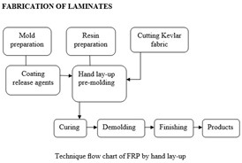
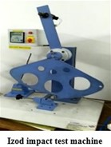
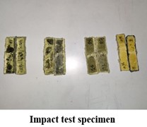
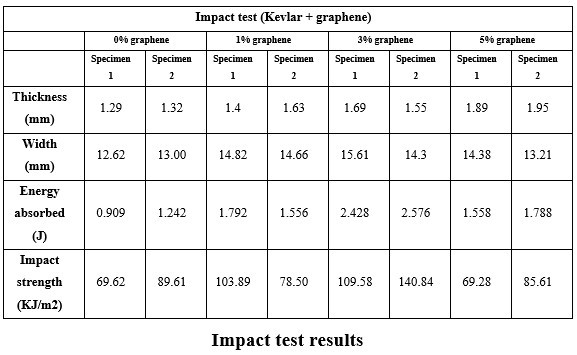
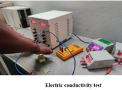
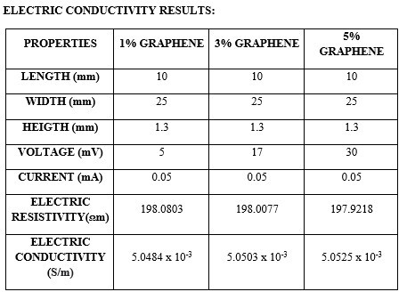
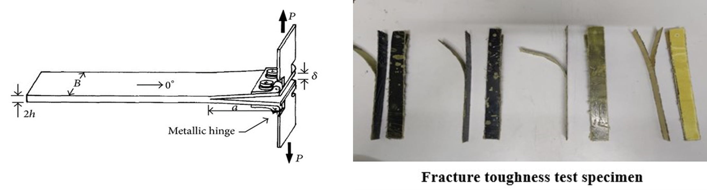
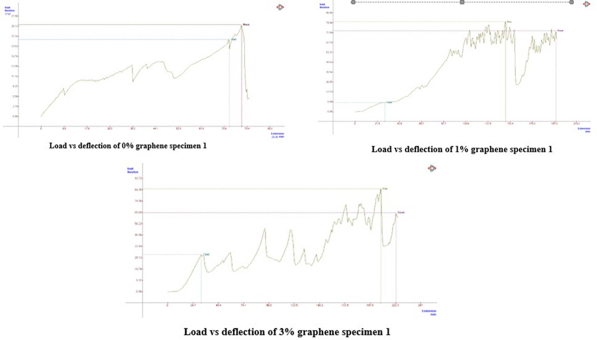

This study explores the impact of nanoparticles on composites, enhancing
properties such as mechanical strength, toughness, and electrical
conductivity. Using Kevlar fiber, Araldite LY 556 resin, and Aradur HY
951 hardener, four specimens with varying graphene nano-filler
percentages (0%, 1%, 3%, and 5%) were created. The project evaluates
property changes in composites as nano-filler content increases, with
the unfilled laminate as the baseline.
Impact Strength Test:
Impact strength is a crucial mechanical property for engineering
materials. Both Izod and Charpy methods are employed to conduct impact
tests on areca fiber-reinforced epoxy composites, following ASTM-D256-90
standards.
Izod Impact Test:
The Izod impact test measures a material's resistance to impact from a
swinging pendulum. It quantifies the kinetic energy required to initiate
and continue fracture until the specimen breaks. Notched Izod impact
tests involve notching specimens to prevent deformation upon impact.
This test serves as a quick quality check and allows material
comparisons for toughness.

Testing Procedure:
-
Use a standard specimen of 54 x 12.7 x 4-5 mm (ASTM) or a Type 1A
multipurpose specimen with end tabs cut off (ISO).
-
Clamp the specimen with the notched side facing the pendulum's
striking edge.
-
Release the pendulum to strike through the specimen, using a heavier
hammer if no breakage occurs.
-
In some cases, testing at reduced temperatures may simulate the
intended use environment, as some materials exhibit lower impact
strength at lower temperatures.

Impact test results:
In summary, our findings indicate that the impact strength exhibited an
upward trend with the addition of nano-filler up to a 3% volume fraction
of graphene. However, beyond this point, a detrimental effect on impact
strength was observed.

Electrical Conductivity:
Electrical resistivity, denoted by the symbol "ρ," quantifies a
material's resistance to electrical flow, with units in ohm·metres (Ω
m). Low resistivity indicates easy electrical flow, while high
resistivity signifies difficulty in conducting electricity. Copper and
aluminium, with very low resistivities (around 20 nΩ m), are commonly
used in electrical wires for efficient power transmission. In contrast,
high-resistivity materials like certain plastics (with resistivities as
high as 1 EΩ m or 1 × 10^18 Ω m) impede electric power flow.

Test Procedure:
A constant current source directs a current (I) through the sample bar,
while a separate ammeter measures I. Simultaneously, a voltmeter
measures the voltage (V) generated across the inner part of the bar.
Alternatively, a voltage source can be used to apply voltage across
outer contacts, with an ammeter in series measuring current through the
sample bar.
Results:
The addition of graphene to the composite resulted in an enhancement of
electrical conductivity. However, while there was improvement in
comparison to graphene-free laminates, the degree of improvement
remained relatively minor as the percentage of graphene varied.

Fracture Toughness Test:
Fracture toughness quantifies a material's resistance to rapid and
unlimited crack propagation at a critical stress intensity factor. It
measures a material's ability to resist crack growth, and standardised
values are typically available for reference.

Testing Procedure:
In accordance with ASTM standards, Mode I fracture toughness testing is
conducted using ASTM D5528. This test assesses the opening interlaminar
fracture toughness of continuous fiber-reinforced composite materials.
It employs a double cantilever beam (DCB) specimen with a nonadhesive
film at the midplane to initiate delamination. The test evaluates a
material's susceptibility to delamination and helps establish design
parameters for composite structures, considering factors such as strain
energy release rate and load application (opening or tensile load per
Mode I).
Results:
We found that fracture toughness increased with the addition of
nano-filler up to a 1% volume fraction of graphene. However, beyond this
point, a decrease in fracture toughness was observed.

Conclusion:
This project has revealed important insights into the performance of
Kevlar-reinforced composites with the addition of graphene nano-fillers.
Specifically, we observed that the impact strength of these composites
increased as we introduced graphene nano-fillers up to a 3% weight
ratio. However, beyond this threshold, the impact strength experienced a
decline, likely attributed to the formation of agglomerations resulting
from the high specific volume of graphene.
Additionally, the incorporation of graphene led to an improvement in
electrical conductivity within the laminates. Nevertheless, further
increasing the percentage of graphene did not yield significant
improvements.
In terms of fracture toughness, our findings showed an increase when
nano-fillers were added up to a 1% volume fraction of graphene.
Subsequently, a decline in fracture toughness was observed after
reaching this 1% threshold.
Considering these observations, it can be concluded that an optimal
balance is achieved at a 3% volume fraction of graphene for these
composite materials.